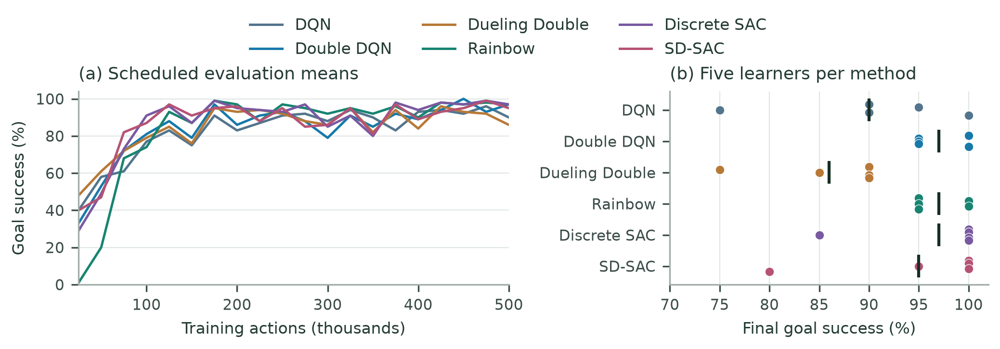
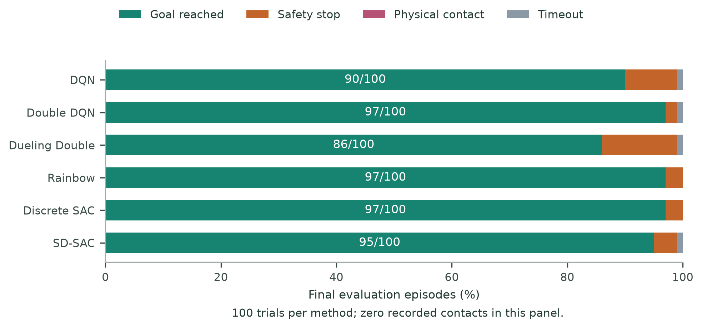
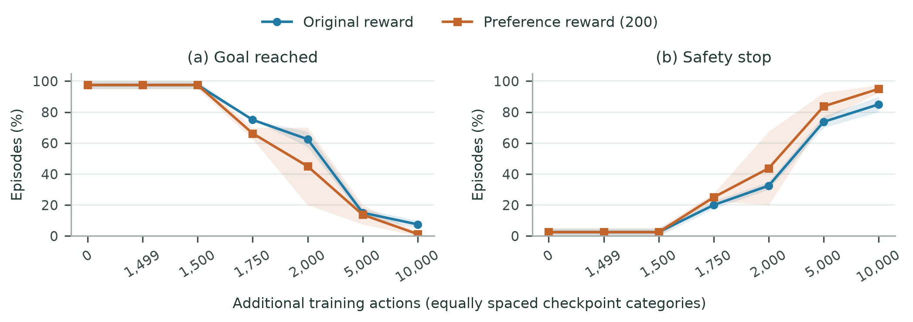
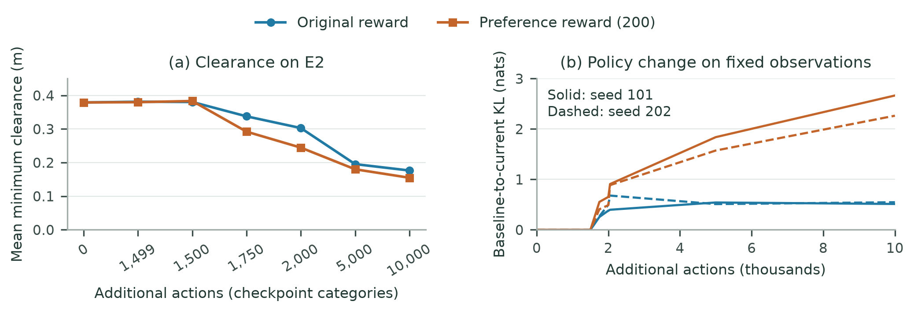
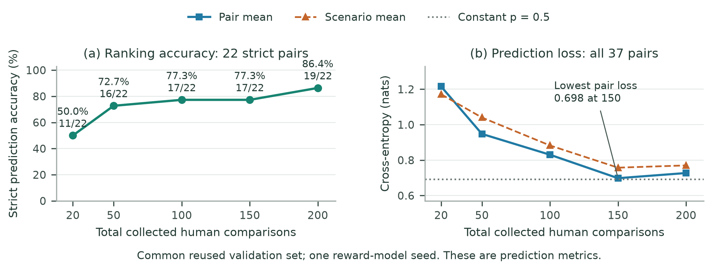

TurtleBot3 RLHF: evaluation results
Goal reaching, safety stops, physical contacts, and reward prediction are reported separately.
Project documentation · Data and provenance · Evaluation methodology and reproducibility
Benchmark: 97 goals in 100 trials
Final primary E1 evaluation: five learners with 20 trials each. Discrete SAC, Double DQN, and Rainbow tie at 97%. SD is across five learner rates.
| Method | Goals | Success (%) | Learner SD (pp) | Safety stops | Contacts | Timeouts |
|---|---|---|---|---|---|---|
| DQN | 90/100 | 90 | 9.35 | 9 | 0 | 1 |
| Double DQN | 97/100 | 97 | 2.74 | 2 | 0 | 1 |
| Dueling Double | 86/100 | 86 | 6.52 | 13 | 0 | 1 |
| Rainbow | 97/100 | 97 | 2.74 | 3 | 0 | 0 |
| Discrete SAC | 97/100 | 97 | 6.71 | 3 | 0 | 0 |
| SD-SAC | 95/100 | 95 | 8.66 | 4 | 0 | 1 |


Goal retention during policy continuation
E2 uses 20 scenarios, two learners, and two action-selection modes, totaling 80 trials. Both actor-only continuations lose goal-reaching performance.
| Condition | Goals | Success (%) | Safety stops | Contacts | Timeouts |
|---|---|---|---|---|---|
| Frozen baseline | 78/80 | 97.5 | 2 | 0 | 0 |
| Original reward, +10k actions | 6/80 | 7.5 | 68 | 0 | 6 |
| Preference reward (200), +10k actions | 1/80 | 1.25 | 76 | 0 | 3 |


Human-comparison budgets and reward prediction
The same 22 strict validation pairs determine accuracy; cross-entropy uses all 37 pairs including 15 ties. Validation was reused for selection and only one reward-model seed is available.
| Collected comparisons | Fitting pairs | Correct / strict pairs | Accuracy (%) | Pair cross-entropy |
|---|---|---|---|---|
| 20 | 15 | 11/22 | 50.00 | 1.216 |
| 50 | 36 | 16/22 | 72.73 | 0.948 |
| 100 | 75 | 17/22 | 77.27 | 0.830 |
| 150 | 109 | 17/22 | 77.27 | 0.698 |
| 200 | 143 | 19/22 | 86.36 | 0.727 |

Limitations
E1 and E2 use different scenario panels. Contacts were measured with an active stopping mechanism. Both continuation conditions restart critics and replay, so reward effects are not isolated. Prediction results reuse validation pairs and one reward-model seed; navigation gains across budgets and physical-robot gains remain unmeasured. Reproducing the figures from summaries does not rerun the experiments.